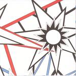

| Artist: | Effeto Doppler |
| Title: | Indifferenticieli |
| Label: | Mizmaze MZ 012 |
| Length(s): | 53 minutes |
| Year(s) of release: | 2003 |
| Month of review: | [11/2003] |
| 1) | 17 Febbraio | 3.52 |
| 2) | Stato Di Grazia | 4.15 |
| 3) | Cometa | 4.47 |
| 4) | 3 Mo D | 4.11 |
| 5) | E.D. | 4.52 |
| 6) | Xche' 6 Vento | 3.54 |
| 7) | Sensi | 5.31 |
| 8) | Indiferrente | 4.25 |
| 9) | Carbonio | 3.32 |
| 10) | La Valle Dell'oro | 5.16 |
| 11) | Flashback | 2.02 |
| 12) | Il Silenzio | 6.42 |
The guitar opening of Stato Di Grazia is pretty heavy and in your face, followed by initially tense vocals. As the track breaks through it gets more of a punkrock feel, letting the tension fade a little, helped along by the double vocals, that have a far more open sound.
With Cometa the noise feel completely disappears, but for the drum rhythm, which is just a tad too far to the fore. The melody is created by wah-wahing and acoustic guitar, the vocals laid back, almost lazy.
3 Mo D returns to the noise feel, although the acoustic guitars lighten the feel. The mid section with low voice and bass accompaniment helps in this too. E.D. is fully noise, with heavy guitars and dominant vocals starting off. As it progresses the guitar gains momentum, bulding towards a climax.
Xche' 6 Vento is a laid back track, with slow guitars and low vocals. But for a twist of the guitar it remains true to this peaceful feel. The start of Sensi continues this laid back feel, but as the track progresses it gains in strength, especially on guitar, helped by echoing vocals in the chorus. The guitar bridge makes any remaining thoughts of peace clear out.
Indifferente is pretty melodious with acoustic guitars and in the back some tingling electrics, moving to the fore during the mid session interval, reviving the noise feel. The ending of the tracks reminds me a little of the searing sound in Bowie's Heroes.
Carbonio starts out more or less tongue in cheeck sounding, pretty acoustic, almost ethnic (sort of like the slower Mano Negro stuff), but after a break has a full noise closing.
La Valle Dell'Oro builds on a swooping wind, moving into a section with jangling guitars and slow synths accompanying laid back vocals.
Flashback is a short track, led by guitar and dirty vocals.
Il Silenzio vocally reminds of Lou Reed (Italian with a Lou Reed accent, sort of), with noise guitars. About half way through the track we move into an experimental feedback section, from which the drums drag us back into action, to then retreat again.
Italian noise. Never expected that.